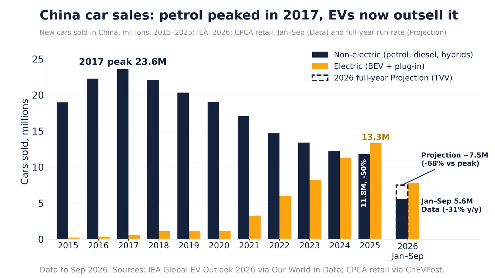

Q2. China Credit

IMF World Economic Outlook general government gross debt, % of GDP (latest year in FRED shown in legend). China's ratio has more than doubled since the mid-2010s on the IMF measure, which excludes much local-government financing-vehicle debt.
Sources: FRED GGGDTAJPA188N: IMF WEO Japan FRED GGGDTAITA188N: IMF WEO Italy FRED GGGDTACNA188N: IMF WEO China

BIS total credit to the private non-financial sector (households and companies). China reached 201% of GDP in Oct 2025, up from 107% in 2008. Japan's ratio peaked at 214% in Oct 1993 before its lost decades; the BIS has long flagged rapid credit build-ups as a crisis warning.
Sources: FRED QCNPAM770A: BIS China FRED QJPPAM770A: BIS Japan FRED QUSPAM770A: BIS US FRED QXMPAM770A: BIS euro area BIS credit statistics

BIS real residential property price index for China was 85.1 in Jan 2026 (2010=100), 25% below its peak of 113.0 in Jul 2021. Property and related industries are commonly estimated at a quarter or more of China's economy.

China new-car sales, millions: petrol peaked 2017; EVs lead since 2025. IEA to 2025, CPCA Jan–Sep 2026.
Data
- 2017 (Data): petrol and diesel car sales peaked at 23.6M (IEA).
- 2025 (Data): petrol and diesel cars fell to 11.8M, half the peak; NEVs outsold them.
- Jan–Sep 2026 (Data): petrol and diesel retail 5.6M, down 31% year on year (CPCA).
- Full-year 2026 (Projection/Speculation): about 7.5M if the Jan–Sep pace holds, roughly −68% vs 2017.
Doubt: China's NEV count includes plug-in hybrids (PHEVs), which still burn petrol, so 'petrol is dying' overstates the shift.
Sources: IEA Global EV Outlook 2026 via Our World in Data CPCA Sep 2026 retail via CnEVPost